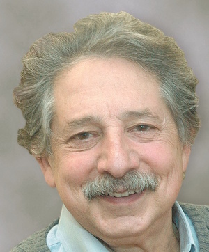
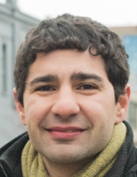

Madison Mayoral Candidates Answers to 5 Basic Transit Questions
Since good transit is an important infrastructure element tied to economic development, well-being, environmental sustainability and social justice, citizens should know your answers to the following questions. If elected:
Incumbent Paul Soglin
1. Will you take the lead in creating a Regional Transport Authority for the Madison urbanized area? If yes, please explain how this would build on the existing local bus transit system.Our transit future depends upon our ability to create an RTA, whether it is the immediate need for BRT or in future decades, rail. Up until now, efforts throughout the state to create RTAs failed because of opposition in the state legislature. I will not allow that to stop our efforts.
Today, Madison’s transit system is designed with the assumption there will be a functional RTA with proper funding. While this is a challenging prospect, I believe we should plan for nothing less than the best.
Last month, I met with Assembly Speaker, Representative Robin Vos, a longtime foe of RTAs. No bill allowing an RTA will come out of the Assembly without his approval. The meeting was cordial and thoughtful. We discussed the environmental and economic benefits of RTAs for communities like Madison and my willingness to take the responsibility to persuade the voters to approve a sales tax to fund a Madison RTA.
We will continue to build on the existing system with our commitment to Bus Rapid Transit (BRT) and be prepared for a regional transit system.
2. Will you lead in creating a multi-modal terminal in Madison that provides for seamless and convenient connections between inter- and intra-city travel?
Finding an affordable site for a bus terminal that is centrally and conveniently located is a challenge. That is why, at a staff meeting, I asked the question: “when we rebuild the Lake Street Ramp, can we turn the entire ground level plate into a terminal for inter-city buses, convenient to Madison Metro?”
This idea is not without its challenging problems. We need ramps to serve autos going to the upper and lower levels of the ramp. Lake Street has a sidewalk with heavy pedestrian use and sight lines that will be an issue.
Every time I have been Mayor, the city was faced with the closing of bus terminals and we found alternative new solutions; this tenure will be no different. Keep in mind that we cannot require the bus companies to utilize the terminal since they are averse to paying the cost.
In any case, we will continue to work on costing out this plan so we can have a community discussion about the terminal.
3. Will you take the lead in creating policies that reduce automobile travel, parking and road expansions--in short, Transit Oriented Development? If so, give an example.
Throughout my career in public office, the focus was public transit. I led the fight to have the city acquire the old Madison Bus Company, which led to new buses, new routes, and record setting ridership levels. At the same time the city launched its first efforts to create a network of bicycle routes starting with the Lake Monona System. When I returned to office in 1989, the system had experienced a decade of decline in ridership that I promptly reversed. Last year, the city again set a record for ridership levels.
The key to expanding successful ridership is to provide a hospitable, convenient, efficient transit system, as well as other viable alternatives to the private automobile, which includes walking, bicycling, car sharing and cabs. That is why we are doing the following:
- Looking at relocating and rebuilding the bus transit points, which nobody wanted near them. Now we want them to become an integral neighborhood fixture, seen as a destination for retail, not an undesirable fixture.
- Rebuilding roads like Cottage Grove with a feel of Monroe or Willy Streets, not a street where parking is the centerpiece.
- Figuring out how to accommodate public parking for car sharing systems under existing state statutes, and reforming those statutes.
- Slowing the overall expansion of the city’s street reconstruction budget which was preventing us from working on alternative transportation options as well as the challenges of equity.
- Continuing with an aggressive bicycle route system.
- Making sure that then overpasses and bridges are rebuilt, they have adequate safe space for pedestrians and bicyclists.
- See answers to #4 below.
4. Will you lead in re-ordering transportation priorities in favor of accessible and environmentally sustainable modes such as public transit, bicycles and walking? If so, give an example.
We have already embraced U.S. Secretary of Transportation Foxx’s recent challenge to create greater safety and awareness for pedestrians. This means a range of commitments. We will ensure that sidewalks are free of obstructions and signs blocking the path of everyone including individuals with disabilities and those who use wheelchairs. We will aggressively work with older neighborhoods — usually communities annexed to Madison after World War II — to ensure that there are sidewalks on at least one side of the street. This may mean reducing assessments, and installing sidewalks that are not in a straight line but meander around mature trees and fences.
Right now, the Parks Department is working to devise a system for discussing how to create walking loops of approximately a mile in circumference for every resident within Madison. Using already selected favorite neighborhood routes, we hope to link schools, parks, neighborhood shopping, and the lakes. When each neighborhood has selected its favorite routes, hopefully we will have a series of connecting loops that will allow us to walk across the city, as we transition from one the arc of one figure-eight to another.
We remain steadfast in completing our safe bicycle routes. There are gaps such as the challenge to finish the segment on Sherman Avenue. But we will figure it out.
The biggest goal is the reconstruction of Stoughton Road. The existing highway does not accommodate anything but heavy motor vehicle traffic. It acts as a vast chasm splitting our eastside neighborhoods. I will press forward to get state support to construct a garden parkway with moderate speeds, developable right of way, accommodations for bikes and pedestrians.
5. Will you lead in implementing a streamlined Bus Rapid Transit while maintaining good local bus service?
Yes. I launched the city BRT initiative two years and am committed to seeing it implemented providing the best local and BRT service in the United States. Bus stations and hubs will be places riders want to be, not avoid. The payment system will be seamless and monthly or daily passes easy to purchase. Hopefully, with committed leadership in Congress and at the State Capital we will get the necessary financial support to acquire new equipment and the much needed new maintenance facility for our growing bus fleet which is a high priority.

Challenger Scott Resnick
1. Will you take the lead in creating a Regional Transport Authority for the Madison urbanized area? If yes, please explain how this would build on the existing local bus transit system.
While building a new Regional Transportation Authority will not be easy, we have to work with our neighbors in Sun Prairie, Middleton and Fitchburg to consider new ways to approach joint transit funding. This could involve the creation of a joint bond issue, a public private partnership, or by developing business improvement districts funded via municipal services agreements.
2. Will you lead in creating a multi-modal terminal in Madison that provides for seamless and convenient connections between inter- and intra-city travel?
As Madison grows, multi-modal transportation needs to be incorporated into our thoughts in planning and actual implementation. This means working with the bus companies to create a bus terminal to replace the one that was demolished on West Washington. A bus station can serve as a central location for travelers entering and leaving our city and could be located downtown or by the north transfer point. Although the future of rail seems bleak now, we also must consider a regional transportation hub that could be accessible by rail. We must be prepared for when the political climate in the state changes and high speed rail in Madison is a reality.
3. Will you take the lead in creating policies that reduce automobile travel, parking and road expansions--in short, Transit Oriented Development? If so, give an example.
I believe Madison should set a goal of reducing car ownership on the Isthmus by 50 percent in the next 10 years. During my time on City Council, I have spearheaded building with little or no parking as a first step to meet these ends over objections from the plan commission. Additionally, I have encouraged alternative forms of transportation such as car sharing and have successfully introduced cars-to-go to the Madison market.
4. Will you lead in re-ordering transportation priorities in favor of accessible and environmentally sustainable modes such as public transit, bicycles and walking? If so, give an example.
Our next mayor must support sustainable transportation development initiatives for our city. This includes taking steps to improve our neighborhood Walk Scores, expanding community bicycle programs, and better head the input of bikers. This is why we need to update our city's bicycle plan in order to reflect the input from bikers in our community and re-organize the city's bureaucratic structure that oversees bicycling. Currently, it is split among too many different positions and people. The City should create a single position that oversees all bicycling issues and who can work with Engineering, Traffic Engineering, the Mayor's office, and the Pedestrian, Bicycle & Motor Vehicle Commission to coordinate and streamline the process for addressing bicycling issues.
5. Will you lead in implementing a streamlined Bus Rapid Transit while maintaining good local bus service?
Bus Rapid Transit (BRT) provides faster public transportation at a lower cost than Light Rail Transit (LRT). Madison's public transit system currently suffers in comparison to the offerings available in Minneapolis and Chicago, and needs to stay modern and competitive to be a desirable place to live and work. Better public transit will encourage higher ridership which will help decrease the need for parking on the Isthmus and lessen traffic congestion on the Isthmus and Beltline.
However, we cannot move forward with a BRT plan that focuses predominantly on the near-west side while largely ignoring the north side and south side of Madison. While designing a bus rapid transit service, we must make sure we are providing equitable service throughout the city and make sure that we are not withholding service from some neighborhoods that could use it the most.